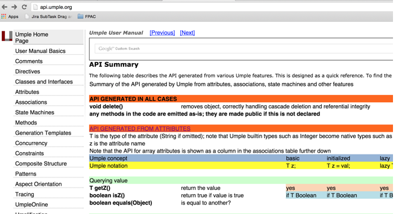
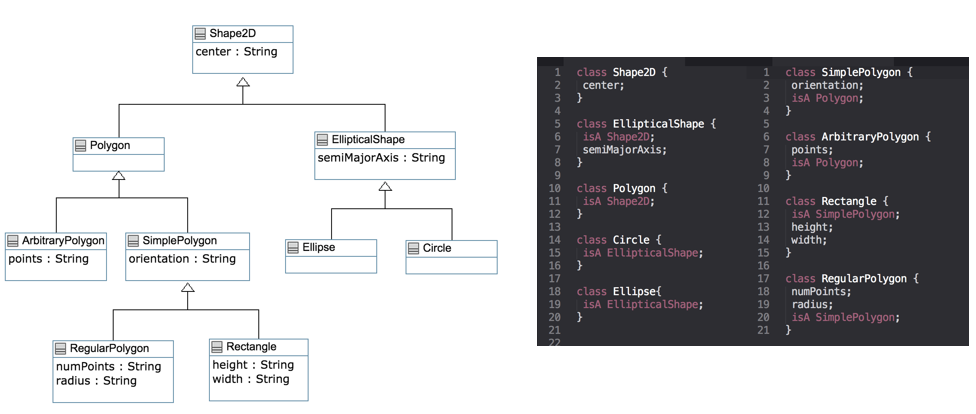
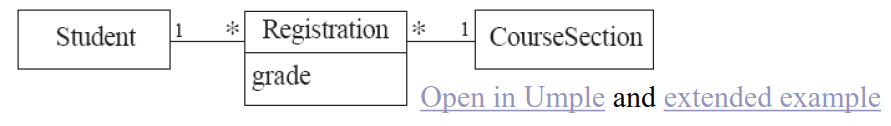

Download DOC-PDF, DOC-DOCX, SLIDE, PPTX,
Open source textual modelling tool set for 3 platforms
Command line compiler
Web-based tool (UMPLEOnline) for demos and education
Eclipse plugin
Code generator for UML ++
Infinitely nested state machines, with concurrency
Proper referential integrity and multiplicity constraints on associations
Traits, mixins, aspects for modularity
Text generation templates, patterns, traits
Pre-processor to add UML, patterns and other features on top of Java, PhP, C++ and other languages
Entry-point: https://www.UMPLE.org
Github: https://github.com/UMPLE/UMPLE
UMPLE Online: https://try.UMPLE.org
The UMPLEOnline web interface is at try.UMPLE.org
The user manual is at manual.UMPLE.org
The UMPLE home page is at www.UMPLE.org
UMPLE download page: dl.UMPLE.org
Designers want the best combination of features:
Textual editing and blending with other languages
Ability to use in an agile process
Write tests, continuous integration, versioning
Combine the best of agility and modeling
Excellent code generation
Multi-platform (command line, Eclipse, VsCode, Web)
Practical and easy to use for developers
Open source
Many existing tools:
Lacked in usability
Awkward to edit diagrams
Many steps to do a task
Lengthy learning process
Lack in ongoing support
Could be enhanced by us perhaps, but we would be tied to key decisions (e.g. Eclipse-only)
Model is code
No need to edit generated code
We will mostly be using
UMPLEonline
In a web browser: http://try.UMPLE.org
Or in Docker: http://docker.UMPLE.org
UMPLE on the command line: http://dl.UMPLE.org
Needs Java 8 JDK on the command line:
http://bit.ly/1lO1FSV
mkdir ~/src && cd ~/src && git clone git@github.com:UMPLE/UMPLE.git
docker run -i -t -v `pwd`:/src UMPLE/UMPLE:0.4.0 bash
Optional:
UMPLE in Eclipse
cmake and gcc for compiling C++ code
P1. Modeling is programming and vice versa
P2. An UMPLE programmer should never need to edit generated code to accomplish any task.
P3. The UMPLE compiler can accept and generate code that uses nothing but UML abstractions.
P4. A program without UMPLE features can be compiled by an UMPLE compiler.
P5. A programmer can incrementally add UMPLE features to an existing program
P6. UMPLE extends the base language in a minimally invasive and safe way.
P7. UMPLE features can be created and viewed diagrammatically or textually
P8. UMPLE goes beyond UML
Key elements:
Classes
Attributes
Associations
Generalizations
Methods
We will look at all these using examples via UMPLE ONLINE
UMPLE code/models are stored in files with suffix .ump
Look at the example at the bottom of
Click on Load the above code into UMPLEOnline
T
Control-t
D
Control-d
A
M
G
Control-g
S
Control-s
E
Control-e
UMPLE’s server can handle 80,000 transactions per hour
80,000
But needs a good Internet connection (sometimes hundreds of students have assignments due)
To maximize speed of UMPLEOnline run it in your local machine:
java -jar UMPLE.jar model.ump
java -jar UMPLE.jar --help
java –jar UMPLE.jar model.ump -c -
Note in particular
"Instance variables"
Specified like a Java or C++ field or member variable
But, intended to be more abstract!
a = "init value";
As in UML, more abstract than instance variables
Always private by default
Should only be accessed get, set methods
Can be stereotyped (upcoming slides) to affect code generation
Can have aspects applied (discussed later)
Can be constrained (discussed later)
getName()
setName()
name
public
private
UB = upper bound

String // (default if none specified) Integer Float Double Boolean Time Date
lazy b; // sets it to null, 0, “” depending on type
defaulted s = "def"; // resettable to the default
autounique x; // sets attribute to 1, 2, 3 …
internal i; // doesn’t generate any get/set either
Useful for objects where you want to guarantee no possible change once created
Generate a constructor argument and get method but no set method
immutable String str;
lazy immutable z;
class Point { // Cartesian coordinates Float x; Float y; // Polar coordinates Float rho = {Math.sqrt(Math.pow(getX(), 2) + Math.pow(getY(), 2))} Float theta = {Math.toDegrees(Math.atan2(getY(),getX()))} }
class Office { Integer number; Phone[] installedTelephones; } class Phone { String digits; String callerID; }
equals()
hashcode()
class Student { Integer id; name; key { id } }
isA
superclass
trait
interface
class Shape { colour; } class Rectangle { isA Shape; }
Open in UMPLE
Inappropriate hierarchy of Classes
What should the model be?
Declare signatures of a group of methods that must be implemented by various classes
Also declared using the keyword isA
Essentially the same concept as in Java
Let’s explore examples in the user manual …
Methods can be added to any UMPLE code.
UMPLE parses the signature only; the rest is passed to the generated code.
You can specify different bodies in different languages
We will look at examples in the user manual …
http://associations.UMPLE.org

--
->
*
0..*
1..*
1
2
1..3
0..2
* -> 0..1, * -> 1, * -> *, * -> m..n, * - >n, *->m..* and*->0..n.
0..1, 0..n, *, 1, n, m..n,m..*
class Employee { id; firstName; lastName; } class Company { name; 1 -- * Employee; }
class Person{ id; firstName; lastName; } class Company { name; 1 employer -- * Person employee; }
When an instance on one side of the association changes
The linked instances on the other side know …
And vice-versa
This is standard in UMPLE associations, which are bidirectional
class Day { * -> 1 Note; } class Note {}
and Extended Example

class Student {} class CourseSection {} associationClass Registration { * Student; * CourseSection; }
class Course { * self isMutuallyExclusiveWith; // Symmetric } association { * Course successor -- * Course prerequisite; }
class X {} class Y { 1 -- * X; }
class X {} class Y {} association { 1 Y -- * X; }
isPartOf
class Vehicle { 1 whole -- * VehiclePart part; } class VehiclePart{ }
class Building { 1 <@>- * Room; } class Room{ }
class Academy { 1 -- * Student registrants sorted {id}; } class Student { Integer id; name; }
End−Of−Week−6End-Of-Week-6End−Of−Week−6